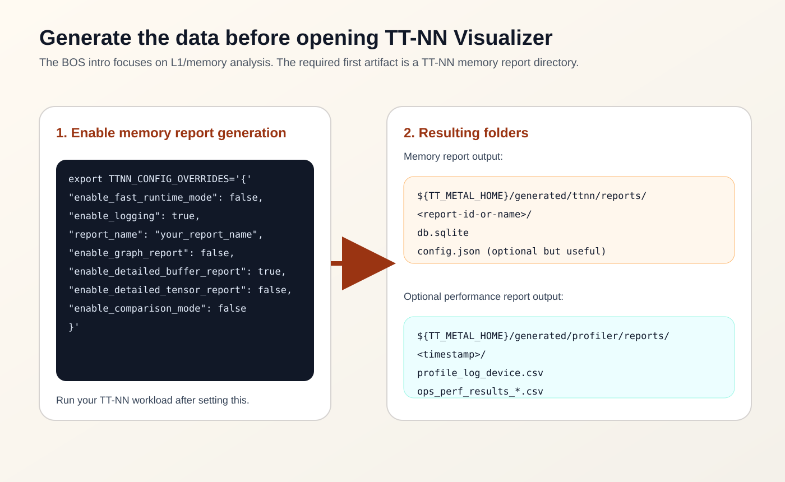
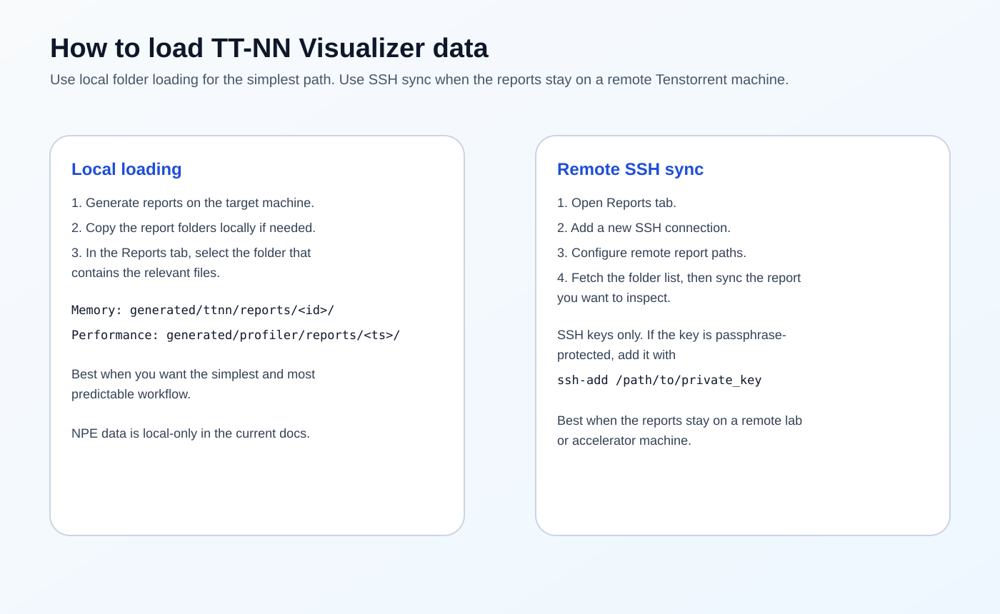
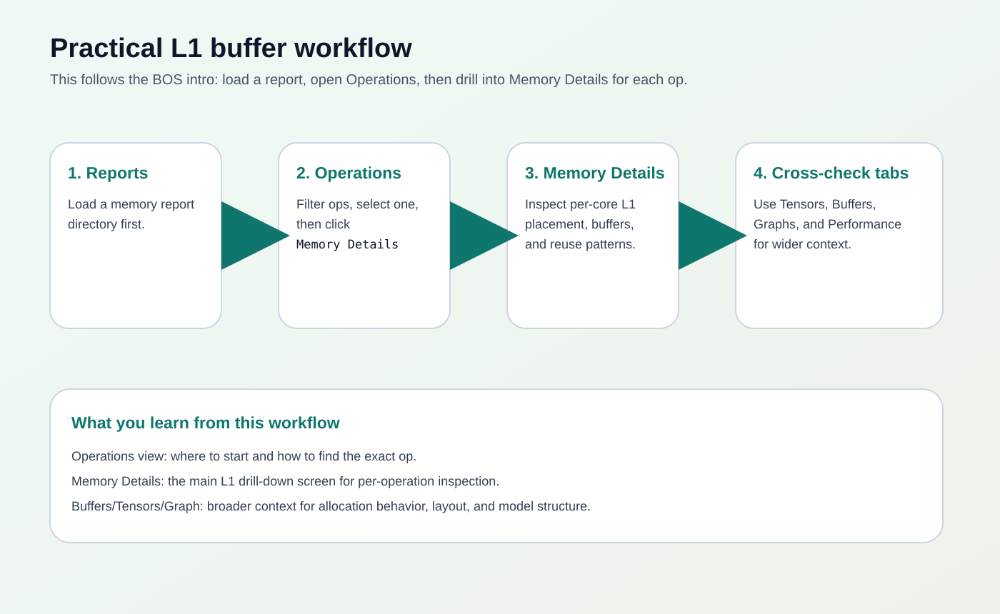

TT-NN Visualizer Practical Example
Follow the BOS-style L1 workflow: generate a memory report, load it, open Operations, and inspect per-operation memory details.
Step 1
Generate a TT-NN memory report
Generate a TT-NN memory report
Step 2
Load it from the Reports tab
Load it from the Reports tab
Step 3
Open Operations
Open Operations
Step 4
Drill into Memory Details
Drill into Memory Details
Generate The Report
export TTNN_CONFIG_OVERRIDES='{
"enable_fast_runtime_mode": false,
"enable_logging": true,
"enable_graph_report": false,
"report_name": "l1_visualizer_demo",
"enable_detailed_buffer_report": true,
"enable_detailed_tensor_report": false,
"enable_comparison_mode": false
}'
Run your TT-NN model after setting this.

Load The Data
Use the Reports tab to load the generated folder locally, or sync it from a remote machine over SSH.

Inspect L1 Memory

After loading the report, open Operations, choose an op, and click Memory Details.
Add Context With Other Tabs
Use Tensors, Buffers, and Graph to understand what you saw in the per-operation L1 view. Add Performance only if you also loaded profiler data.